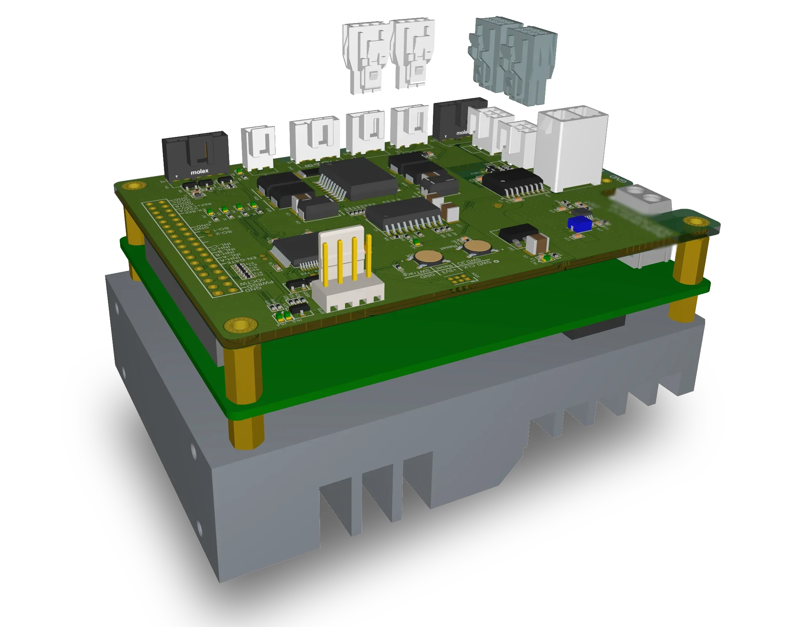

Stepper Motor Controller
for Precise Wheel Steering
Within the Mobile Robot project, for motor wheel block steering, a Stepper Motor Controller was developed for precise control of the stepper motor.
The L297 has been selected due to chip shortage.
The STM32F303 receives commands from the robot’s main controller and generates the phase control sequence for stepper drive via L297+298. ISO1450 provides galvanic isolation for RS-485 communication between the STM32F303 and other robot modules.
To optimize the thermal operating conditions and maximize the power output of an obsolete controller, a fan was mounted on a massive heatsink with cutouts for oversized components. During steering, the driver was temporarily pushed to critical current levels, while a reduced-current mode was used for holding torque.
